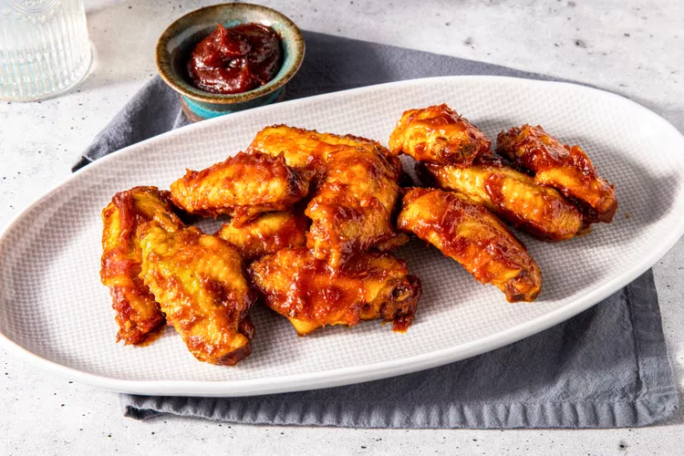

These microwave BBQ chicken wings are easy to make—there’s no need to dirty too many bowls nor turn on the oven, broiler, or grill.
When we first entered the kitchen to develop a recipe for chicken wings cooked in the microwave, there were some doubts. The microwave?! Will they be any good? Yet we were shocked and delighted at how these microwaved wings turned out, including the BBQ sauce we glazed the wings with, which was also made in the microwave. This is a BBQ chicken wings recipe that’s easy to pull together, and there’s no need to dirty too many bowls nor turn on the oven, broiler, or grill. And though you won’t get crispy skin as you typically would when the wings are cooked in the oven or grill, they are delicious.
Stir together the ketchup, brown sugar, apple cider vinegar, Worcestershire sauce, smoked paprika, brown mustard, garlic powder, cumin, and salt in a small microwave-safe bowl. Cover the bowl with a wet paper towel and microwave on high until thickened, 7 to 8 minutes, stirring halfway through and re-covering. Set the BBQ sauce aside. You can reuse the paper towel to cook the wings.
Place the chicken wings in a medium microwave-safe bowl. Cover the bowl with the same paper towel and microwave on high until the wings are almost cooked through, about 6 minutes. Discard paper towel. Drain the wings in a colander set in the sink. Then pat the wings dry with paper towels, and return them into the bowl.
Add about 1/2 cup BBQ sauce to the wings and toss to evenly coat. Microwave on high, uncovered, until sauce glazes the wings, about 4 minutes, stirring halfway through. We developed and tested the recipe in a 1,250-watt microwave. You may need to cook the wings for longer, in 1-minute intervals, depending on the power of your microwave. The best way to check to make sure the chicken is cooked through is to measure its temperature with an instant read thermometer—you’re looking for at least 165°F. Serve with the remaining 1/4 cup BBQ sauce on the side for dipping.